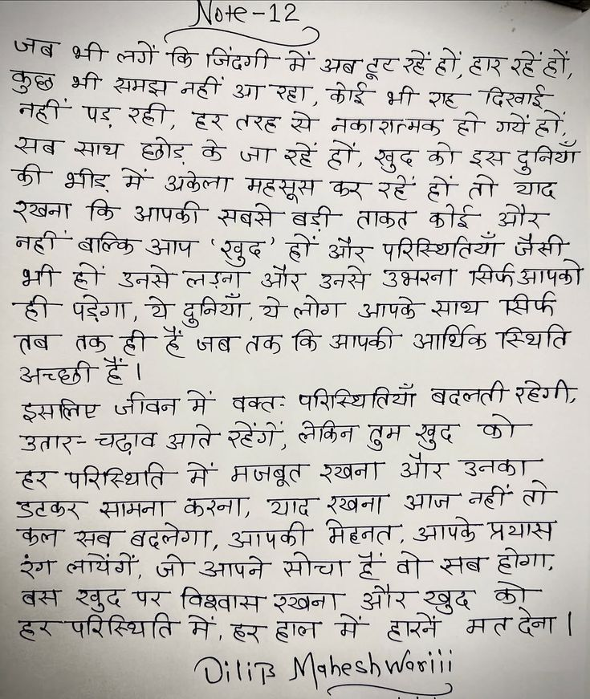

File: hin_sample_03.jpg

Note-12 जब भी लगें कि जिंदगी में अब टूट रहे हों, हार रहे हों, कुछ भी समझ नहीं आ रहा, कोई भी राह दिखाई नहीं पड़ रही, हर तरह से नकारात्मक हो गये हों, सब साथ छोड़ के जा रहे हों, खुद को इस दुनिया की भीड़ में अकेला महसूस कर रहे हों तो याद रखना कि आपकी सबसे बड़ी ताकत कोई और नहीं बल्कि आप ‘खुद’ हों और परिस्थितियाँ जैसी भी हों उनसे लड़ना और उनसे उभरना सिर्फ आपको ही पड़ेगा, ये दुनियाँ, ये लोग आपके साथ सिर्फ तब तक ही हैं जब तक कि आपकी आर्थिक स्थिति अच्छी हैं। इसलिए जीवन में वक्तः परिस्थितियाँ बदलती रहेगी, उतार-चढ़ाव आते रहेंगे, लेकिन तुम खुद को हर परिस्थिति में मजबूत रखना और उनका डटकर सामना करना, याद रखना आज नहीं तो कल सब बदलेगा, आपकी मेहनत, आपके प्रयास रंग लायेंगे, जो आपने सोचा हैं वो सब होगा, बस खुद पर विश्वास रखना और खुद को हर परिस्थिति में, हर हाल में हारने मत देना। Dilip Maheshwariii
Note-12 जब भी लगें कि जिंदगी में अब टूट रहें हों, हार रहें हों, कुछ भी समझ नहीं आ रहा, कोई भी राह दिखाई नहीं पड़ रही, हर तरह से नकाशामक हो गये हों, सब साथ छोड़ के जा रहें हों, खुद को इस दुनियाँ की भीड़ में अकेला महसूस कर रहें हों तो याद रखना कि आपकी सबसे बड़ी ताकत कोई और नहीं बल्कि आप 'खुद' हों और परिस्थितियाँ जैसी भी हों उनसे लड़ना और उनसे उभरना सिर्फ आपको ही पड़ेगा, ये दुनियाँ, ये लोग आपके साथ सिर्फ तब तक ही हैं जब तक कि आपकी आर्थिक स्थिति अच्छी हैं। इसलिए जीवन में वक्तः परिस्थितियाँ बदलती रहेगी, उतार-चढ़ाव आते रहेंगे, लेकिन तुम खुद को हर परिस्थिति में मजबूत रखना और उनका डटकर सामना करना, याद रखना आज नहीं तो कल सब बदलेगा, आपकी मेहनत, आपके प्रयास रंग लायेंगें, जो आपने सोचा है वो सब होगा, बस खुद पर विश्वास रखना और खुद को हर परिस्थिति में, हर हाल में हारनें मत देना । Dilip Maheshwari
शी. |(0१ए-१2 “/“/““ न न् ० ०४०ई कुछ भी अमइा नहीं ay अब ge रहेबी | आई नही पड सदी) हर ee सो कोई भी: रह" दिखाई $ > ELAS | मकाशत्मक हीः ग्यें हो Se साथ BE के sr रहे हों, खुदा को Sap gear GY क्षीर मे अकेला 'करः : रहे हो: $ हिना कि महसूस कर रहे हो तो aE es ams सबसे- बडी- ated ate A नही CS आप 'ख़ुद' हो sie परिस्थितियां जैसी: at हो इनसे लजन और उनसे SHAT yank aay EP पदेणा, थे Gear, BS लोग आपके arr TAH ee, हैं जब तक कि आपकी आर्थिक Rate च्छ्छी &। हा इसलिए जीवन में वक््तः परिस्थितियाँ बदलती रंडेगीः जतार- AGIA आति ET, HST तुम BT DT ex परिस्थिति- A मजबूत WAT और AST SSL सामना करना; शादा रखना आज aT TT कला सब बदलेगा, आपकी मेहनत, आपके ABR ठग लायेंगें, जी आपने सीच्या हू वो सबः हीगाः जा Wave fagqay yaar और Ie कोए x Recent में हारने acetl " OUR Mahesh ४४१४ i
HEE TE Tee एज पट शी पद TR “ae पल 3 जो हाकाशाजक ही TERT ~ ae = OS आा"रहें gh खुक को इस दुनिया See कि आपकी Sas बडी लाकत कोई और, FRI SOS ST “खुद EF और परिस्थितिया: जैसी: ae OA हो। ea ae GS zoe SeRaT ASS 6b Geom, 2 gear heer ave SET aH Wome जब तक Gam kts Reale इसलिए client Sage परिस्थितियों Tew रहेगी; _जतारड लात: आति ior कीकिना Or aT OT उहय परिस्थिति" से" अजबूत wear और SST SOL RLS, Ue रखना आज जी ता Oe सर्व अद्नेगों, आवापकी AAT, आपके AAT "हरा लयिगों, shame Ger है तो ae होगा; ae Be पर Rage easy SI कोड अर परिस्थिति मे eer मैं" हारने AT eT |
जब ी लगें कि कुछ नही ' पड रही, सब साथ की याद रखना नही ' बाल्कि आप दुनियाँ , रहेगी इसलिए जीवन में बदलती वक्तः हर सामना करना डटकर मेरनत , आपक प्रथास बदलेगा , कल आपकी बस खुद पर Oiliz Jahesh Warini
❌ OCR Failed
ऑफ़ला
गुजिः११ जब भी लगें-कि। जिंदगी-में अबटूटरहेंद हों हाररहेंहों रुछ्ठ भी समझानहीं आारहहा कोइें नरे । भी राह दिखाई नद्दीं पड़-रही हर-तरह रे नकांशत्मक हो गयें। हो ई रगब स्माथ छोड़ के ज। रहें हों खुदकोो इःश्न क़ दुनियाँ याप भ्रीड़ में अकेला महसूस कररहें हों तो ई रखना कि आपकी सबसे-बड़ी ताकुत छोई औऱ नह्ी बाल्कि अनाप् खुद हं औऱ परिद्थितियां जैखी थी हीं उनसे-लड़ना औऱ उनसे उघ्नावन सिर्फआपको ही पंडरंगगा थे दुनियाँ क़ ये लोग आपके स्ाध्य सिर्फ तब तक़ ही-ह जबतककि आपकी आधिकु रिथति अच्छाहं। इखाल्िट जीवनमें बकत परिस्थितियाँ बदलती रंहेगेी उतार-चढ़ाव आगंते रहेंगे लेकिन टुमखुद हर-परिद्थिांति गं गेजबूति रखना आर उधनर्ठ उिंतटर्क रामज दे।रण स्ााद-र ररघना आज नहीं तो ई कुल्त ख़ब-बदलोगा। आपकी मेह्हनत आपकेप्रयास रेग लाचेंगे जो आपने सोचा हेवो-सब हगा बर्नें १५ पर विश्वास रखाना औरखबुद हृर-परिदि्थिति मेंदर नह ह्ाल में हारनें मतदेना गिंऽ गीवःफलणए
जब भ्ी लगें कि जिंदगी मेें अब टूट र हें टार रे हों कुब नट्टी भौ समझ नहीं अ रहा कोड भर श्ट दिखाई सब पड़ रही ट तरह रे नकारात्मक ह गयें हें फो भीड़ साथ छोड़ ब जा रे हं ख़ुद को इस दुनियएाँ रखना गि मं अकेला महसूस क र टं त याढ न्टी बल्कि आपर्की सबसे बती ताकत कोर्ई और भ हं आप ख़ुद ठं ओर परिस्थितियाँ मीर्फ जैसी आपको ही उनसे लगना अर उनसे आपके उभरना साथ पीर्फ पड़ेगा यै दुनियाँ ग लोग आथिक स्थिति तब तक ट ट जब तक कि आपकी अच्छ्छी हें। वक्त परिस्थितियाँ बदलती रहेगी इसतिष्ट जीवन मे लकिन तूम ख़ुद फो उतार चढ़ाव आते रहेंगे टर परिस्थिति में मजबूत रखना आर उनका नठीं तो डटक सामना करना याद रखना आज आपक़े प्रयास फ़ल सब बदलेगा आपकी मेहनत सब होगा रेंश लायेंगे जो आपने सोचा ग टं वो क ह बरन परिस्थिति रद पर विश्वास रखना मॉ और हारनें ख़ुद मत देना। में। ब ह्ल गकोछ्डार्लवशगएं गंंडं